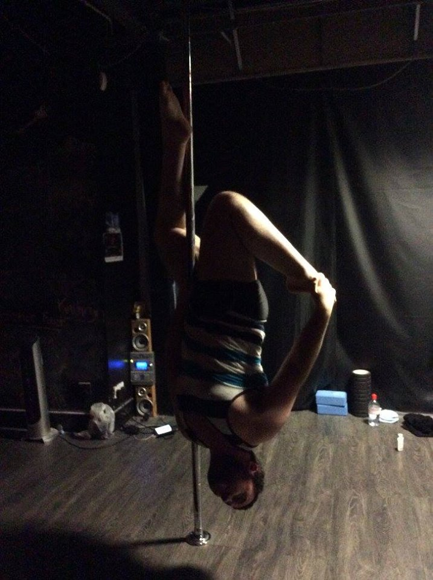
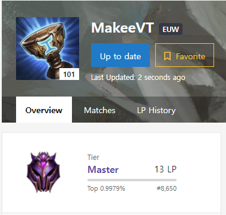

Pole Fitness

I always like to start with my wildcard interest, I've been an avid poler on and off for years, to me its the most fun way to exercise, it has a great feeling of progression. Learning new moves really scratches that itch of achieving something.
Video Games

Like a lot of people I enjoy playing video games, some I'm good at some I'm not. I usually enjoy playing with friends, I love the teamwork and camaraderie that comes along with that. Probably my highest gaming accolade is reaching top 1% in Teamfight Tactics (TFT)
Other games I enjoy
- Counter-Strike 2
- Dota 2
- Elden Ring
- Rouge Squadron
- Half Life: Alyx